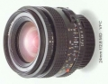

器材库 > 35mm画幅MF定焦镜头 > MD 24/2.8 VFC

详细规格
发布日期
未知
焦距
24mm
最大光圈
f/2.8
最小光圈
f/22
视角（对角）
84
镜头结构
9片/7组
最近对焦距离
30cm
滤镜口径
55mm
镜头卡口
Minolta MD/MC
防抖
否
颜色
黑色
尺寸
64.5 x 50.5mm
重量
340g
tuoboseng2011-06-05 23:374.83 分
操作性 5.00耐用性 5.00性价比 4.50解像力 4.50色彩还原 5.00机械结构 5.00
普桑手动挡2008-10-10 20:014.92 分
操作性 5.00耐用性 5.00性价比 4.50解像力 5.00色彩还原 5.00机械结构 5.00
产品图 / 样片
美能达 MD 24/2.8 VFC
评测 / 相关文章
该产品暂无存档的评测文章